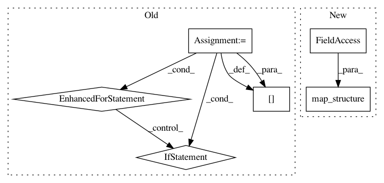

876a1ba5bd0c5570dae7de7e3334bbe85e561d17,rllib/utils/torch_ops.py,,convert_to_non_torch_type,#Any#,23
Before Change
values converted to non-torch Tensor types.
ret = {}
for k, v in stats_dict.items():
if isinstance(v, torch.Tensor):
ret[k] = v.cpu().item() if len(v.size()) == 0 else v.cpu().numpy()
else:
ret[k] = v
return ret
After Change
else:
return item
return tree.map_structure(mapping, stats)
In pattern: SUPERPATTERN
Frequency: 3
Non-data size: 6
Instances
Project Name: ray-project/ray
Commit Name: 876a1ba5bd0c5570dae7de7e3334bbe85e561d17
Time: 2020-03-06
Author: sven@anyscale.io
File Name: rllib/utils/torch_ops.py
Class Name:
Method Name: convert_to_non_torch_type
Project Name: ray-project/ray
Commit Name: 1775e89f262111791fabfd40f80a24f74738fe54
Time: 2020-04-28
Author: sven@anyscale.io
File Name: rllib/models/tf/tf_action_dist.py
Class Name: MultiActionDistribution
Method Name: logp
Project Name: google-research/google-research
Commit Name: da6b040e254710f0df907d838db51f4f2cc9bf93
Time: 2021-03-08
Author: ldennis@google.com
File Name: social_rl/multiagent_tfagents/multiagent_ppo.py
Class Name: MultiagentPPO
Method Name: get_single_agent_specs